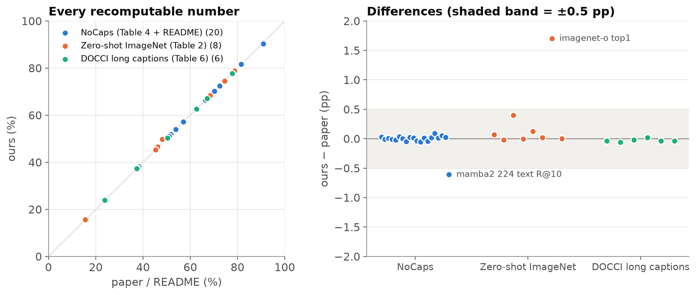
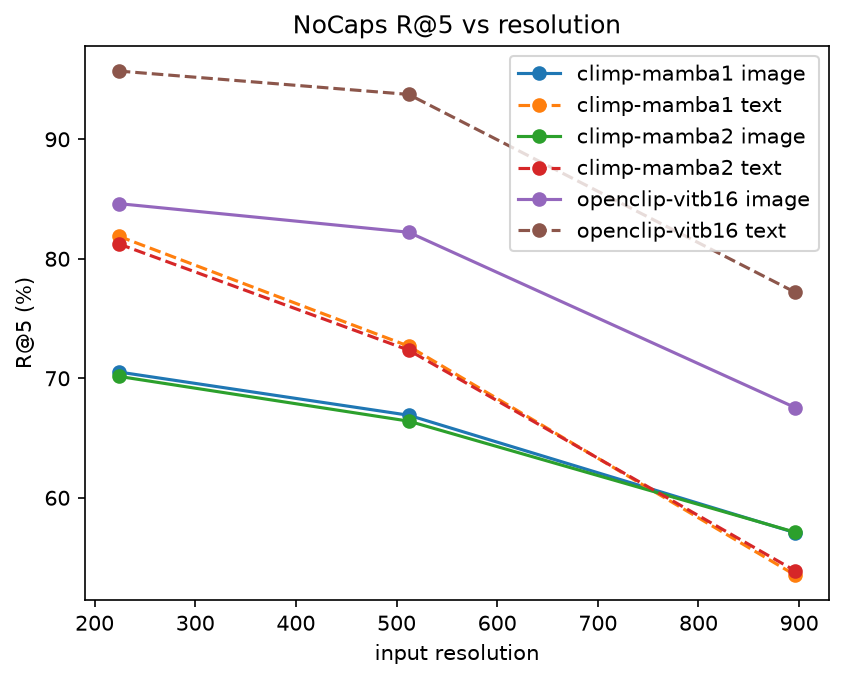
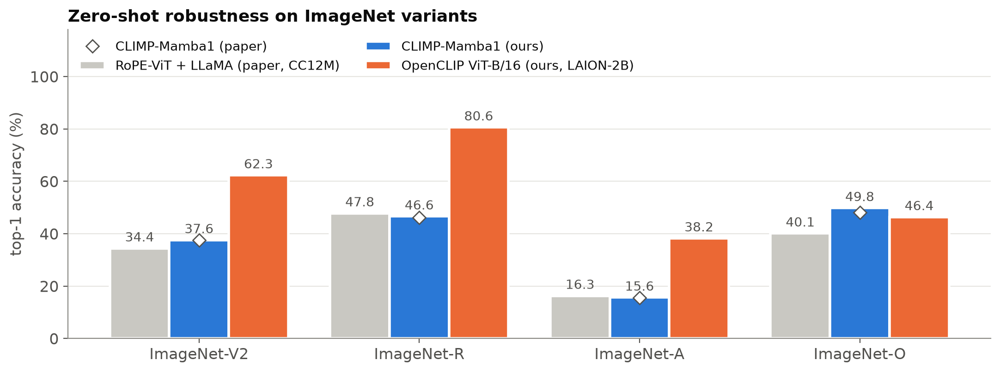
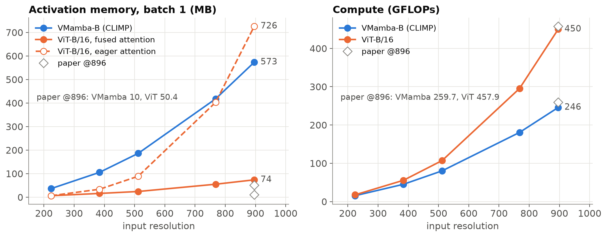
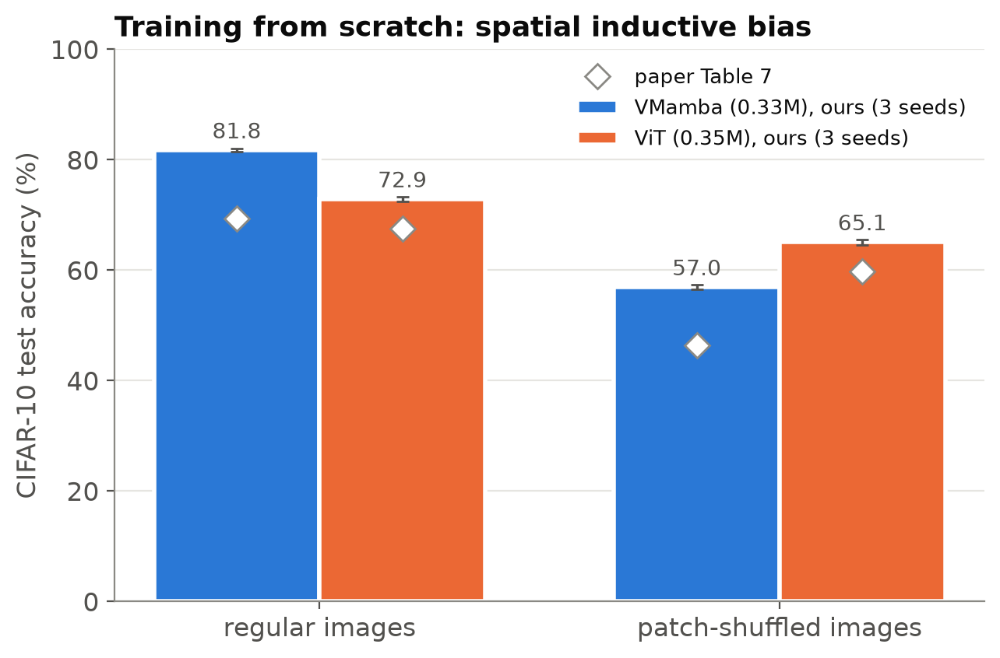
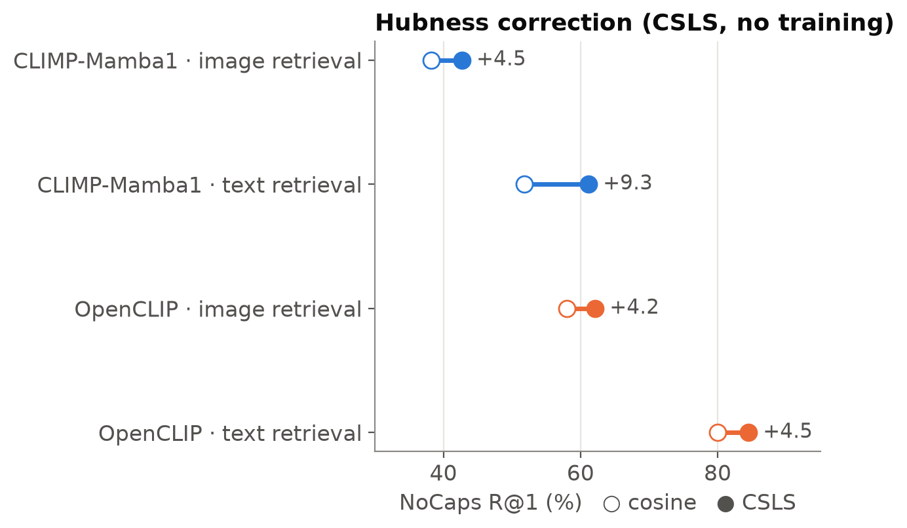
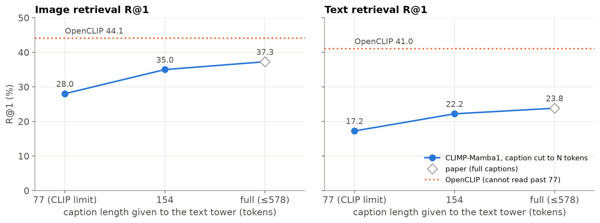
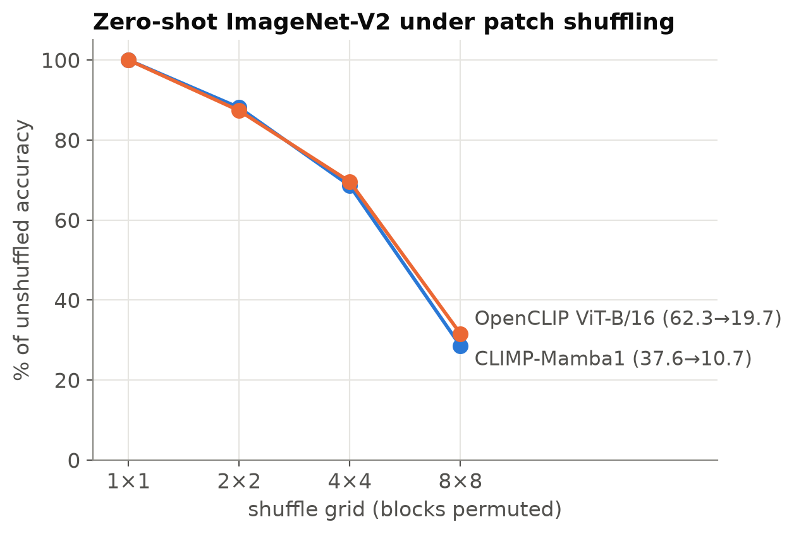
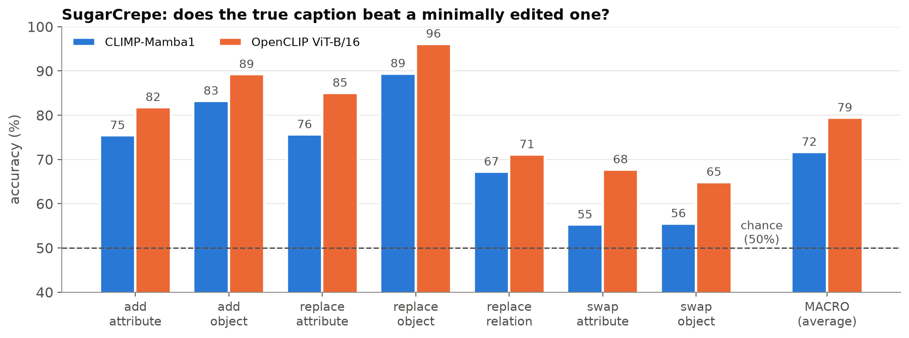

CS613 paper presentation report · Tanish Wanve
Paper: N. Shabtay, I. Zimerman, E. Schwartz, R. Giryes, CLIMP: Contrastive Language-Image Mamba Pretraining, arXiv 2601.06891 (v2).
Code: https://github.com/tanishwanve-git/climp-cs613 (upstream: https://github.com/NimrodShabtay/CLIMP, commit 3ff1279).
CLIP-style models pair a Vision Transformer (ViT) with a Transformer text encoder. This design has three known weaknesses:
CLIMP replaces both towers with state-space models (SSMs): VMamba for images and a pretrained Mamba language model for text. The paper claims that this gives better retrieval, better out-of-distribution (OOD) robustness, native any-resolution inference with lower memory and FLOPs, long-caption retrieval, and a measurable spatial inductive bias.
We re-evaluated the two released checkpoints on eight experiments on 2× Tesla T4. We added a strong, publicly available ViT-B/16 CLIP baseline and four analyses that are not in the paper.
What reproduces. We did not retrain CLIMP. We ran the authors' released, already-trained weights on the same test sets. Close agreement is therefore expected if the evaluation is correct, and it is our check that it is. The training claims themselves (the controlled CC12M comparison and scaling) are not re-tested; only the small CIFAR-10 experiment (E8) is retrained, and there only the pattern, not the values, matches. Every number we could recompute from the released weights matches the paper to within 0.1–0.4 pp:
What does not reproduce or does not generalise:
New findings:
CLIP [Radford et al. 2021] learns a shared image–text embedding space from image–caption pairs. It is the backbone of zero-shot classification, retrieval, and the vision side of most multimodal LLMs. Standard CLIP uses Transformers on both sides, and the paper names three limitations of that design.
Contrastive encoders are infrastructure: their weaknesses propagate into every downstream system built on them. A backbone with linear cost in sequence length, no fixed resolution and no fixed text length would directly benefit:
The authors' hypothesis is that a fully SSM-based CLIP inherits all of these benefits at once.
Central idea. Build CLIP from SSMs on both sides:
Both towers are trained with the standard CLIP contrastive loss.
What is new:
Main insight. The scan order of VMamba is its positional information. VMamba has no positional embedding to interpolate, so the same weights run at any resolution. The recurrence decays with distance (for Mamba-2 the transition is Ā = λI, so a state k steps back is weighted by λᵏ), which gives a locality bias.
On the text side, a causal recurrent model has no position table. It reads arbitrarily long text, and its last hidden state summarises the whole input.
Why it should work, according to the authors:
The paper's headline numbers (CLIP-Benchmark average of 31 datasets, all trained on CC12M) are below. These are paper numbers, given for context; we cannot recompute them because the baselines are not released.
| Vision | Text | Acc@1 | Acc@5 | IR@5 | TR@5 |
|---|---|---|---|---|---|
| ViT-B/16 | LLaMA-3.2-1B | 27.3 | 56.4 | 62.8 | 72.9 |
| RoPE-ViT-B/16 | LLaMA-3.2-1B | 27.3 | 59.0 | 63.4 | 72.9 |
| CLIMP (VMamba-B) | Mamba-2 | 26.9 | 59.0 | 65.2 | 75.3 |
| CLIMP (VMamba-B) | Mamba-1 | 29.6 | 58.5 | 65.5 | 77.0 |
Paper Table 1 (excerpt).
An SSM maps an input signal x(t) to an output y(t) through a hidden state h(t) ∈ ℝᴺ:
h′(t) = A h(t) + B x(t), y(t) = C h(t) + D x(t)
For token sequences the system is discretised with a step size Δ. Mamba uses the zero-order hold (ZOH) rule:
Ā = exp(ΔA), B̄ = (ΔA)⁻¹(exp(ΔA) − I)·ΔB, hₜ = Ā hₜ₋₁ + B̄ xₜ, yₜ = C hₜ + D xₜ.
In words:
The cost is linear in sequence length L, compared with O(L²) for attention.
Mamba-1 makes B, C and Δ functions of the current input xₜ. This selection lets the model decide, token by token, what to store and what to forget. That is what makes it competitive with attention on language. Because the parameters vary per token, the model can no longer be computed as a convolution; Mamba uses a hardware-aware parallel scan instead.
Mamba-2 restricts A to a scalar times the identity (A = aI) and shares parameters across heads. This structure (state-space duality, SSD) lets the recurrence be computed as blocked matrix multiplications, which is 2–8× faster. The cost is expressivity: Mamba-2 has one decay rate per head instead of one per channel.
The paper finds that Mamba-1 is slightly better for contrastive alignment (Table 1), and our NoCaps results agree (§5.1).
An image is not a 1-D sequence. VMamba handles this in four steps:
After the four scans, every patch has received information from every direction, so its receptive field is global. The cost is still linear in the number of patches.
VMamba-B is hierarchical (4 stages with patch merging, like a CNN), and its pooled output is projected to the 768-d joint space by W_v.
CLIMP turns positional embeddings off. In the upstream code, posembed=False, and imgsize only affects the positional embedding. Position is therefore encoded only by scan order, and one set of weights serves every resolution. We verified that the parameter names and shapes are identical at 224 and 896 px (log line in results/logs/E1.log).
The text tower is a pretrained Mamba LM. For tokens t₁…t_L with a padding mask, the text embedding is the last layer's hidden state at the last non-padding position, projected by W_t:
t_raw = H_k, k = max{ i : token i is not padding } (paper Eq. 1)
The model is causal: each hₜ depends only on tokens ≤ t. The last real token is therefore the only position that has seen the whole caption, which makes it the natural summary. This is the same reason GPT-style embedding models use the last token.
Because the model has no position table, captions of any length are accepted. A consequence we verified: padding on the right (Mamba-1 tokenizer) or the left (Mamba-2 tokenizer) never changes the embedding (cosine similarity 1.00000 in the E1 check).
CLIMP keeps CLIP's symmetric InfoNCE loss. For a batch of N pairs with normalised embeddings vᵢ (image) and tᵢ (text), and learned temperature τ:
L = −(1/2N) Σᵢ [ log softmaxⱼ(vᵢ·tⱼ/τ)ᵢ + log softmaxⱼ(tᵢ·vⱼ/τ)ᵢ ]
In words, in each row and column of the N×N similarity matrix, the true pair should score highest. The other N−1 captions in the batch act as negatives, which is why CLIP needs large batches.
Training setup (paper):
| Decision | Why |
|---|---|
| SSM on both sides | Linear cost and no fixed length on either modality. Ablation (Table 10): VMamba + Mamba text beats VMamba + LLaMA by +3.5 Acc@1, a "matched architecture" synergy. |
| Autoregressive (causal) LM, not a bidirectional SSM | Mature pretrained LMs exist; the bidirectional Hydra was worse in Table 10. |
| No positional embeddings in VMamba | Any-resolution inference without interpolation or extra training. |
| Controlled CC12M training | Separates the effect of the architecture from the effect of the data. |
Retraining CLIMP on CC12M (2048 batch × 10 epochs with 1.4 B-parameter text towers) is far beyond a student budget. We therefore evaluate the released checkpoints (NimrodShabtay1986/CLIMP-Mamba1, -Mamba2) and retrain only the paper's small CIFAR-10 experiment.
The paper's baselines (RoPE-ViT, FlexViT and NaFlex with LLaMA) are not released. As a reference we use OpenCLIP ViT-B/16 trained on LAION-2B (laion2b_s34b_b88k):
This is not a controlled comparison. OpenCLIP was trained on LAION-2B, a dataset about 167× larger than CC12M. It tells us how CLIMP compares to a CLIP that people actually use, not whether the architecture is better at equal data.
| ID | Experiment | Data (size) | Paper ref. | Type |
|---|---|---|---|---|
| E1 | NoCaps retrieval @224/512/896 px + correctness gate | NoCaps val (4,500 images, 45,000 captions) | Table 4, README | Reproduction |
| E2 | Alignment / uniformity / hubness; CSLS correction | NoCaps @224 | Table 8 | Reproduction + new |
| E3 | Zero-shot ImageNet-V2 / R / A / O | 10,000 / 30,000 / 7,500 / 2,000 images | Table 2 | Reproduction |
| E4 | Zero-shot under G×G patch shuffle (G = 2, 4, 8) | ImageNet-V2 | – | New |
| E5 | DOCCI long-caption retrieval @896, text cut at 77 / 154 / full | DOCCI test (5,000 pairs) | Table 6 | Reproduction + new |
| E6 | Vision-encoder memory and FLOPs, 224–896 px | – | Fig. 3 | Reproduction + new |
| E7 | SugarCrepe compositionality (7 subsets) | 7,511 items, COCO val2017 | – | New |
| E8 | Tiny VMamba vs. ViT on CIFAR-10, regular vs. patch-shuffled, 3 seeds | CIFAR-10 (50,000 / 10,000) | Table 7 | Reproduction |
Our implementation is unit-tested to give identical numbers to upstream eval_nocaps.py.
- Alignment [Wang & Isola 2020]: E‖vᵢ − tᵢ‖² over matched pairs. Lower means matched pairs are closer.
- Uniformity: log E exp(−2‖xᵢ − xⱼ‖²). Lower means the embeddings are spread more evenly over the sphere.
- Hubness [Radovanović et al. 2010]: the skewness of N_k, where N_k(g) counts how many queries have gallery item g among their k nearest neighbours.
- High skew means a few "hub" items appear in many neighbour lists and crowd out the correct answers.
- We use k = 10 because the paper does not state k.
- CSLS [Conneau et al. 2018]:
- score(q, g) = 2·cos(q, g) − r_q − r_g, where r is an item's mean similarity to its 10 nearest cross-modal neighbours.
- It penalises hubs. It is transductive: it uses the test set's own neighbourhoods.
- Zero-shot accuracy: top-1 and top-5 accuracy with class-name prompts averaged over the 80 OpenAI templates (the CLIP-Benchmark protocol).
- SugarCrepe accuracy: an item counts as correct if sim(image, true caption) > sim(image, hard-negative caption). Chance is 50%.
The code is our own and contains no copies of upstream code. It imports the upstream model code from an untouched, pinned clone (CLIMP/ at commit 3ff1279).
src/common.py model loading (CLIMP + OpenCLIP), batched encoding, patch shuffle, seeding, run metadata
src/metrics.py recall@k, alignment, uniformity, hubness, CSLS (pure torch)
src/exp_*.py one script per experiment (E1–E8); each writes results/<name>.json with config,
library versions, GPU, git hashes, runtime and peak RAM
src/make_results.py builds every table (Markdown + LaTeX) and figure ONLY from results/*.json
tests/test_metrics.py 11 unit tests (recall vs upstream code, metrics, patch shuffle, batching)
kaggle/run_climp.ipynb two-GPU runner (one job queue per T4), staged runs, per-job timeouts
ASSUMPTIONS.md every deviation and interpretation, one line each
Safeguards for correctness:
padding="longest") gives the same embeddings as upstream's padding (cosine similarity 1.00000).
- It also checks that one VMamba instance has identical parameters at every resolution.--smoke mode on a tiny subset. These runs caught two real failures before the full runs: an out-of-memory error on long DOCCI captions, and a library conflict.make_results.py from the result JSONs. The paper's numbers live in paper_numbers.json.Engineering issues we solved:
Compute. Kaggle, 2× Tesla T4 (16 GB), fp16 autocast (the same precision as upstream evaluation). The work ran in two stages:
Peak CPU RAM was 10 GB out of 34 GB.

Figure 1 (ours). Every number from the paper's Tables 2, 4 and 6 and the README that can be recomputed from the released weights. Left: ours vs. the paper's value; right: the difference. 32 of 34 values are within ±0.5 pp (median absolute gap 0.02 pp). The two outliers are ImageNet-O top-1 (+1.7) and Mamba-2 text R@10 (−0.6).
| Model | Res | Image R@1 / R@5 / R@10 | Text R@1 / R@5 / R@10 |
|---|---|---|---|
| CLIMP-Mamba1 | 224 | 38.2 / 70.5 / 81.8 (README 38.2 / 70.5 / 81.8) | 51.8 / 81.9 / 90.9 (README 51.8 / 81.9 / 90.9) |
| CLIMP-Mamba1 | 512 | 34.2 / 66.9 / 79.2 | 42.2 / 72.7 / 83.8 |
| CLIMP-Mamba1 | 896 | 26.2 / 57.1 / 70.8 | 25.3 / 53.5 / 66.5 |
| CLIMP-Mamba2 | 224 | 37.4 / 70.2 / 81.7 (README 37.4 / 70.2 / 81.6) | 51.0 / 81.2 / 90.3 (README 51.0 / 81.3 / 90.9) |
| CLIMP-Mamba2 | 512 | 33.9 / 66.4 / 79.2 | 40.5 / 72.4 / 83.5 |
| CLIMP-Mamba2 | 896 | 25.8 / 57.1 / 70.8 | 24.5 / 53.9 / 66.6 |
| OpenCLIP ViT-B/16 | 224 | 58.0 / 84.6 / 91.2 | 80.0 / 95.7 / 98.2 |
| OpenCLIP ViT-B/16 | 512 | 54.3 / 82.2 / 89.6 | 74.4 / 93.8 / 97.2 |
| OpenCLIP ViT-B/16 | 896 | 39.4 / 67.6 / 77.9 | 51.7 / 77.2 / 84.9 |
R@5 against paper Table 4:
| Model | Res | Image R@5 ours / paper | Text R@5 ours / paper |
|---|---|---|---|
| CLIMP-Mamba1 | 224 | 70.5 / 70.5 | 81.9 / 81.9 |
| CLIMP-Mamba1 | 512 | 66.9 / 66.9 | 72.7 / 72.7 |
| CLIMP-Mamba1 | 896 | 57.1 / 57.1 | 53.5 / 53.5 |
| CLIMP-Mamba2 | 224 | 70.2 / 70.2 | 81.2 / 81.3 |
| CLIMP-Mamba2 | 512 | 66.4 / 66.4 | 72.4 / 72.4 |
| CLIMP-Mamba2 | 896 | 57.1 / 57.1 | 53.9 / 53.8 |

Figure 2 (ours). NoCaps R@5 vs. input resolution (all models trained at 224 px). Grey dashed line: the paper's RoPE-ViT + LLaMA baseline (paper Table 4).
Agreement.
Interpretation.
| Model | Source | Alignment ↓ | Unif. image ↓ | Unif. text ↓ | Hubness image ↓ | Hubness text ↓ |
|---|---|---|---|---|---|---|
| CLIMP-Mamba1 | ours | 0.982 | −3.184 | −3.546 | 1.554 | 1.787 |
| CLIMP-Mamba1 | paper | 0.982 | −3.18 | −3.54 | 1.01 | 1.15 |
| OpenCLIP ViT-B/16 | ours | 1.437 | −2.724 | −2.736 | 1.685 | 4.124 |
Agreement. Alignment and both uniformity values match the paper to the reported precision. This strongly suggests that we compute these metrics the same way: one caption per image, Wang & Isola's definitions.
Gap. Our hubness values are 0.5–0.6 higher. The paper does not specify k or how N_k is computed, so the absolute values are not comparable. The paper's text also says 1.13 while its Table 8 says 1.15.
Our comparison is internally consistent. We use the same k for both models, and CLIMP shows much better alignment (0.98 vs. 1.44) and much less text-side hubness (1.79 vs. 4.12) than OpenCLIP. The paper's geometric argument (tight alignment and low text hubness) therefore holds against OpenCLIP too.
But geometry is not accuracy. OpenCLIP has the worse geometry yet the much better retrieval (§5.1). Alignment and hubness alone do not explain retrieval quality, which weakens the paper's causal story ("better geometry → better retrieval").
| Model | IN-V2 top-1 / 5 | IN-R top-1 / 5 | IN-A top-1 / 5 | IN-O top-1 / 5 |
|---|---|---|---|---|
| CLIMP-Mamba1 (ours) | 37.6 / 68.4 | 46.6 / 74.5 | 15.6 / 45.3 | 49.8 / 78.8 |
| CLIMP-Mamba1 (paper) | 37.5 / 68.4 | 46.2 / 74.5 | 15.5 / 45.3 | 48.1 / 78.8 |
| RoPE-ViT + LLaMA (paper, best baseline) | 34.4 / 65.4 | 47.8 / 76.0 | 16.3 / 46.3 | 40.1 / 69.9 |
| OpenCLIP ViT-B/16 (ours) | 62.3 / 87.0 | 80.6 / 94.0 | 38.2 / 70.6 | 46.4 / 77.3 |
| OpenCLIP ViT-B/16 (paper, quoted) | – | – | – | 42.3 / – |

Figure 3 (ours). Zero-shot top-1. Diamonds: the paper's CLIMP-Mamba1 values; grey: the paper's best CC12M Transformer baseline.
Agreement.
The ImageNet-O claim survives. CLIMP (49.8) beats OpenCLIP ViT-B/16 trained on LAION-2B (46.4 in our run, 42.3 quoted by the paper). The margin is smaller in our measurement: 3.4 pp instead of 5.8 pp.
The broader robustness story does not. On V2, R and A, OpenCLIP leads by 23–34 pp. Averaged over the four sets, OpenCLIP scores 56.9 top-1 vs. CLIMP's 37.4.
| Model | Text length | Image R@1 / R@5 / R@10 | Text R@1 / R@5 / R@10 |
|---|---|---|---|
| CLIMP-Mamba1 (ours) | full | 37.3 / 67.0 / 77.8 | 23.8 / 50.4 / 62.7 |
| CLIMP-Mamba1 (paper) | full | 37.3 / 67.1 / 77.8 | 23.8 / 50.4 / 62.7 |
| NaFlex + LLaMA (paper, best baseline) | full | 29.1 / 55.3 / 67.5 | 26.1 / 53.4 / 65.1 |
Agreement. All six numbers match the paper exactly, except image R@5, which differs by 0.1 pp. Our caption statistics also match: mean 142.6 tokens, 94.5% of captions over 77 tokens, longest 578 (paper: ~142 and 94.4%). The truncation ablation and the OpenCLIP comparison are new and appear in §6.3.
Batch 1, fp16, one forward pass. Activation memory = peak memory − (weights + input).
| Model | Quantity | 224 | 384 | 512 | 768 | 896 | Paper @896 |
|---|---|---|---|---|---|---|---|
| VMamba-B | GFLOPs | 15.4 | 45.1 | 80.2 | 180.5 | 245.7 | 259.7 |
| ViT-B/16 | GFLOPs | 17.6 | 55.5 | 107.1 | 295.3 | 450.0 | 457.9 |
| VMamba-B | activation MB | 36.4 | 105.4 | 186.1 | 417.7 | 573.5 | 10.0 |
| ViT-B/16, fused attention (default) | activation MB | 6.3 | 15.9 | 24.1 | 55.0 | 73.7 | 50.4 |
| ViT-B/16, eager attention | activation MB | 6.3 | 33.7 | 89.0 | 402.7 | 726.3 | – |

Figure 4 (ours). Left: activation memory per image. Right: GFLOPs (fused and eager attention have identical FLOPs). Grey diamonds: the paper's values at 896 px.
FLOPs reproduce.
Memory does not reproduce. The paper reports 10 MB for CLIMP vs. 50 MB for ViT, a 5× saving. In our measurement:
A likely cause of VMamba's high memory: SS2D keeps four directional copies of every feature map, and VMamba-B's early stages run at high spatial resolution.
The paper calls its quantity "resolution-specific memory" but does not define it, and its 10 MB at 896 px is below anything we can measure for an 88 M-parameter network. Our conclusion: the memory advantage depends on the attention implementation and is not intrinsic. Modern fused attention removes the quadratic memory cost of ViT, although it keeps the quadratic compute.
Tiny 3-layer models: VMamba (330,382 parameters) and ViT (347,722 parameters), each within 5% of the paper's sizes. 20 epochs, AdamW, crop + flip augmentation, 3 seeds. "Shuffled" means each image's 8×8 grid of 4×4 patches is randomly permuted, both in training and at test time.
| Model | Data | Train loss ours | Train loss paper | Test acc. ours | Test acc. paper |
|---|---|---|---|---|---|
| VMamba | regular | 0.458 ± 0.003 | 1.028 | 81.76 ± 0.27 | 69.33 |
| ViT | regular | 0.727 ± 0.009 | 1.121 | 72.89 ± 0.42 | 67.50 |
| VMamba | shuffled | 1.149 ± 0.012 | 1.612 | 56.96 ± 0.43 | 46.44 |
| ViT | shuffled | 0.903 ± 0.017 | 1.328 | 65.10 ± 0.49 | 59.72 |

Figure 5 (ours). CIFAR-10 test accuracy, mean ± std over 3 seeds; diamonds: paper Table 7.
The pattern reproduces in every cell.
Our absolute accuracies are higher than the paper's. The paper does not state its epochs, learning rate or augmentation, so we compare the pattern, not the values.
This confirms the paper's claim at small scale. The scan order encodes spatial adjacency: VMamba exploits it when the layout is natural and is hurt when it is destroyed. ViT, which treats patches as a set (plus a positional embedding), is less dependent on layout.
What we did. We evaluated OpenCLIP ViT-B/16 (LAION-2B) with the identical pipeline in E1–E7.
Result. It beats CLIMP in nearly every experiment:
| Experiment | CLIMP-Mamba1 | OpenCLIP | Difference |
|---|---|---|---|
| NoCaps text R@1 @224 | 51.8 | 80.0 | +28.1 |
| NoCaps text R@1 @896 | 25.3 | 51.7 | +26.4 |
| Zero-shot, 4-set average | 37.4 | 56.9 | +19.5 |
| DOCCI image R@1, full vs. 77 tokens | 37.3 | 44.1 | +6.8 |
| SugarCrepe macro | 71.7 | 79.4 | +7.7 |
ImageNet-O is the one exception: CLIMP wins there by 3.4 pp.
What it means. CLIMP's advantages are real at equal training data (CC12M), but data scale still dominates. The paper's controlled comparison is the right test of the architecture. The paper's abstract-level claims ("surpassing CLIP-ViT-B trained on 167× more data") apply to ImageNet-O only.
What we did. We re-scored the NoCaps similarity matrices with CSLS (k = 10), which subtracts each item's average similarity to its neighbours.
| Model | Task | R@1 | R@5 | R@10 |
|---|---|---|---|---|
| CLIMP-Mamba1 | image retrieval | 38.2 → 42.7 (+4.5) | 70.5 → 74.5 | 81.8 → 84.7 |
| CLIMP-Mamba1 | text retrieval | 51.8 → 61.2 (+9.3) | 81.9 → 86.9 | 90.9 → 93.3 |
| OpenCLIP ViT-B/16 | image retrieval | 58.0 → 62.1 (+4.2) | 84.6 → 87.3 | 91.2 → 92.9 |
| OpenCLIP ViT-B/16 | text retrieval | 80.0 → 84.5 (+4.5) | 95.7 → 97.0 | 98.2 → 99.0 |

Figure 6 (ours). NoCaps R@1 with cosine similarity (open circle) and after CSLS re-scoring (filled).
Finding. CSLS needs no training and lifts CLIMP's text R@1 by +9.3 pp, twice the gain it gives OpenCLIP.
The paper presents CLIMP's hubness as already low. Our result shows that the remaining hubness still costs CLIMP substantial retrieval accuracy, especially when images are the queries. A post-hoc correction recovers part of the gap to OpenCLIP: text R@1 goes from −28.1 pp to −23.3 pp.
Caveat: CSLS is transductive, because it uses the test set's own neighbourhoods. It is fair to use only when a batch of queries and the gallery are available together.
What we did. The paper only evaluates full-length captions. We ran CLIMP with captions cut to 77 tokens (CLIP's limit), 154 tokens, and full length. OpenCLIP runs at 77 tokens, its architectural limit.
| Model | Text length | Image R@1 / R@5 / R@10 | Text R@1 / R@5 / R@10 |
|---|---|---|---|
| CLIMP-Mamba1 | 77 | 28.0 / 55.6 / 67.5 | 17.2 / 39.4 / 51.6 |
| CLIMP-Mamba1 | 154 | 35.0 / 65.1 / 75.8 | 22.2 / 48.0 / 60.5 |
| CLIMP-Mamba1 | full | 37.3 / 67.0 / 77.8 | 23.8 / 50.4 / 62.7 |
| OpenCLIP ViT-B/16 | 77 (max) | 44.1 / 69.8 / 78.5 | 41.0 / 66.0 / 75.0 |

Figure 7 (ours). DOCCI R@1 at 896 px vs. the number of caption tokens given to CLIMP's text tower. Dotted line: OpenCLIP, which always truncates at 77 tokens. Diamond: the paper's full-caption value.
Findings.
What we did. We cut each 224-px test image into a G×G grid and randomly permuted the blocks, using the same permutation for both models. We then measured zero-shot ImageNet-V2 accuracy. This tests whether E8's small-scale finding (VMamba depends on spatial layout) carries over to the large pretrained model.
| Model | G=1 (none) | G=2 | G=4 | G=8 |
|---|---|---|---|---|
| CLIMP-Mamba1 | 37.6 | 33.1 (−12%) | 25.8 (−31%) | 10.7 (−71%) |
| OpenCLIP ViT-B/16 | 62.3 | 54.4 (−13%) | 43.4 (−30%) | 19.7 (−68%) |

Figure 8 (ours). Zero-shot ImageNet-V2 top-1 under G×G block shuffling, relative to unshuffled accuracy (absolute values in brackets).
Finding. The relative drops are almost identical at every grid size, within 3 pp of each other. At pretraining scale, CLIMP is neither more nor less sensitive to layout than a ViT.
This contrasts with E8, where the tiny VMamba lost three times as much accuracy as the ViT. A plausible reading: the scan-order bias matters most when data is scarce, which is exactly the sample-efficiency argument the paper makes. Once a model is trained on millions of pairs, both architectures learn similar, largely layout-dependent object features. The spatial-bias argument (E8) should not be extrapolated to the pretrained model's robustness without a test like this one.
See §5.5. Adding the fused-attention ViT shows that the memory comparison depends on the attention kernel, a factor the paper does not discuss.
What we did. SugarCrepe pairs a COCO image with its true caption and a hard negative that adds, replaces or swaps an object, attribute or relation. We count how often the true caption scores higher.
| Model | add att | add obj | repl. att | repl. obj | repl. rel | swap att | swap obj | macro |
|---|---|---|---|---|---|---|---|---|
| CLIMP-Mamba1 | 75.4 | 83.2 | 75.6 | 89.4 | 67.2 | 55.3 | 55.5 | 71.7 |
| OpenCLIP ViT-B/16 | 81.8 | 89.2 | 85.0 | 96.1 | 71.1 | 67.7 | 64.9 | 79.4 |

Figure 9 (ours). SugarCrepe accuracy per subset; dashed line: chance (50%).
Finding. CLIMP trails on every subset (macro −7.7 pp). It is close to chance (50%) on the swap subsets, such as "a white dog and a black cat" vs. "a black dog and a white cat". Those test word order and binding.
This is notable because CLIMP's text tower is a 1.4 B-parameter language model, far larger than OpenCLIP's 63 M-parameter text Transformer, and a causal LM should be sensitive to word order. The contrastive objective on CC12M evidently does not force the model to use that sensitivity. This is the known "bag-of-words" behaviour of CLIP models [Yuksekgonul et al. 2023], and CLIMP inherits it.
For the claim "SSMs are a viable CLIP backbone at equal data": mostly yes. For "better than Transformers in general": no. That would need:
CLIMP is part of a broader shift from "Transformers everywhere" towards sub-quadratic and hybrid sequence models. Examples include Mamba, Mamba-2 and hybrid Mamba-Transformer LLMs such as Jamba and Nemotron-H. It makes three points relevant to modern LLM systems.
The paper appeared in 2026, so its long-term influence is not yet visible. Its clearest contribution is an existence proof that a fully SSM-based CLIP is competitive at equal data.
We reproduced the released CLIMP checkpoints essentially exactly:
These parts of the paper are trustworthy. Three claims did not hold under a broader test:
Our additions show three further things:
Overall: Mamba is a viable CLIP backbone, but not yet a better one.
Author's note. This is a single-author project. The code, experiments, analysis, report and presentation are my own work, written with an AI coding assistant. All reported numbers come from results/*.json, produced by the code in the repository; paper numbers are taken from arXiv 2601.06891 v2 and the upstream README. Every deviation from the paper's protocol is listed in ASSUMPTIONS.md.